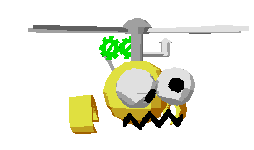

Cartoon Design & Video Titling Design Disks
Maurice Molyneaux first pursued his interest in animation with Reston Movie Maker on the Atari 800. The limitations of that computer made the Atari ST attractive when it became available, and Maurice got involved with the development of the software eventually marketed by Epyx as Art & Film Director. Maurice immediately bought CAD-3D 1.0 when it came out and he got around its lack of animation support by animating CAD-3D renderings in Art & Film Director.
I was using that software to do a mockup of a Star Trek game for a pitch, so what I did was model all the spaceships in CAD 3-D, render out all the angles I wanted, then used those as cels in Film Director. So, by December 1986 I had CAD 3-D generated objects flying around, long before 2.0, Cyber Control and Cyber Paint came on the scene. That game concept didn't sell, but Broderbund was impressed by what I’d done and asked me to create a demo for the Art & Film Director products (eventually published by Epyx). With those I ended up creating an entire 10-minute animated cartoon demo.
Maurice went on to do some writing for ANALOG and ST-Log magazines, which is how he met Andy Eddy. Andy was, at the time, working as a cable television technician and doing computer writing as a hobby. Andy’s interest in computers had always been closely tied to video games:
... the Atari line was popular for me due to the legendary game brand--I’ve been a long-time game player, and had the Battlezone coin-op record twice. That’s probably why I gravitated to Atari computers. I had hoped to get a career going in designing games, and bought an Atari 800 and an assembly language cartridge with that hope, but it wasn't long after that that the computer-game market filled up with lots of software, making it harder to pursue the career plan. However, ANALOG had advertised the need for writers, and I sent some things in that were accepted. In time, I was writing regularly for Analog/ST-Log and some other Atari-related magazines.
In October 1987, Antic and ANALOG ended up with booths across from each other at the Worcester Atari Fair. Gary Yost, who was attending to push the Cyber software, noticed that some cartoons (running inside Art & Film Director) in his competitor’s booth were drawing a crowd. Maurice relates:
Maurice’s Megabit Mouse character for Epyx Art & Film Director
Notably, there was a cartoon character called Megabit Mouse who was interacting with -- one might say fighting -- the program interfaces. I think the thing that distinguished these animations from anything that had been seen before on the ST was that they were genuinely funny... The animation was simple, flat 2-D, but the mouse character was extremely expressive. He'd get a laugh just by cocking his eyebrow at the right moment.
Investigating, Gary met Maurice and Andy, and ultimately signed them up to produce two design disk products to fit nagging gaps in the Cyber product line. One of these products was the Cartoon Design Disk, which focused on animation techniques for 3D cartoon characters. Andy explains:
The 3D human characters walking with scripted head movements and facial expressions
... in the Cartoon disk, Maurice wanted to take the premise of the guys from the Dire Straits video (the moving men from “Money for Nothing”) and really do the animation as it should have been. As advanced as that video was in computer animation, the guys walked without picking up their feet, so I believe our first mission--and success-was articulating the movement of walking and swinging the arms that the “advanced music video” didn't do.
... Maurice had basic movement scripts for the characters when he worked on them, and I took them and added nuances to the animation as well as creating the framework for the test programs that enabled you to enter a series of parameters you wanted. The scripts would create the animation from there. I was like any other person getting those disks, in that I was handed the characters and the basic scripts, and then I screwed around to do a bit more, which is what ended up on the final products. It wasn't so much a division of work as it was taking what he had done, which was substantial, and evolving and polishing and expanding the script side.
The Cartoon Design Disk shipped with three human characters, a humanoid rabbit, three different cartoon insects (reminiscent of the bee in Lucasfilm’s seminal computer animated short film Andre and Wally Bee) and a whimsical automaton called Autogyro. Cyber Control scripts were included for scripting each character, along with extensive documentation. Maurice concludes:
I suppose one disappointment of mine was that I never did get a funny character in 3-D. In Film Director I could play the animation on the fly at speed as I was working in it, so I could finesse the timing and actions until I got them just right. With the Cyber Studio there were so many layers and it took so much time to render out sequences that it wasn't as easy to tweak the animations. You'd have to go alter the Cyber Control script, re-render, and hope this time you got the timing right or the move right or what have you.
The Video Titling Design Disk provided Cyber Control scripts for easily creating flying logos like this...
The other product, the Video Titling Design Disk, was a grab bag of resources and demonstrations of titling techniques that spanned both Cyber Paint and CAD-3D/Cyber Control. As a whole, this product was almost more an educational tool than a practical one because much of the content was in its documentation, and because the included demos and resources would inevitably have required significant modification to be used for a real project. For example, the Video Titling Disk detailed the process of figuring out how to reproduce a complex special effect: the optical “warp” effect used in the title sequence of Star Trek: The Next Generation. The finished animation and the files used to create it were included, but the real value was learning how Maurice and Andy went about it. Their process reflected the experience of many CAD-3D users. Andy comments:
{kind=link}
...or like this. You just choose the letters. The disk even included the font.
Working on the CAD 3-D stuff was a perfect proof of all the things that adults said when you were in school: You'd complain that all this American History and algebra and such was going to be a waste in real life, but here was a case where I had to try to dig up all the 3-D math I learned in hopes of making the scripts work well. For instance, the process of making the bee in the Cartoon disk fly around, we not only had to plot the splines he'd travel, but also try to find a way to align him with the spline, so he was “facing” the direction he was flying. Oh, that was some frustration trying to figure out how to do that in math I hadn't used since high school a decade before.
The “biggest” feature of the Video Titling Design Disk, however, was a clever system for producing animated cursive writing with Cyber Control. Andy and Maurice built a complete cursive alphabet of coordinates (both upper and lower case) and Andy worked out a fancy script to make it all work. The script could even animate a 3D ballpoint pen that drew the letters on the screen:
I was also pretty proud to come up with a way to draw with the pen in the Video Titling disk. It was kind of a hack, but it worked if you were willing to restrict your use of it.
... Of course, CAD 3-D was in flux, and often we'd come up with an idea and the program would later have that feature added to it. I think the pen writing was one such case, where we asked if it would be possible to create an image that could be used as a background for the animation—by “drawing” to the screen at the point of the pen, saving that image and using it as the background image, it looked like the pen was drawing a line when shown frame-to-frame.
Andy has continued to work in publishing as a writer, contributing to the magazines Video Games & Computer Entertainment, GamePro, and GameWEEK (now ieMagazine). He has also written or worked on eight books on games and the Internet.
Maurice has since become a game developer, working with Omnitrend, Psygnosis, Electronic Arts, and Sega (including the Ecco the Dolphin title for Dreamcast and Playstation2) and is currently directing production of wireless games for NuvoStudios.
Spline
A smoothly curving path (in two or three dimensions) through space calculated from three or more fixed points, often specified by the user.
Assembly language
The most rigorous and fundamental language available to a programmer for developing software; typically only used to develop extremely optimized mathematical algorithms. Assembly language programming generally requires special expertise.
Rendering
In computer graphics, rendering is the process of algorithmically deriving a picture or piece of a picture from other information, which may be a view of 3D geometry, 2D geometry (line art) or other picture information.